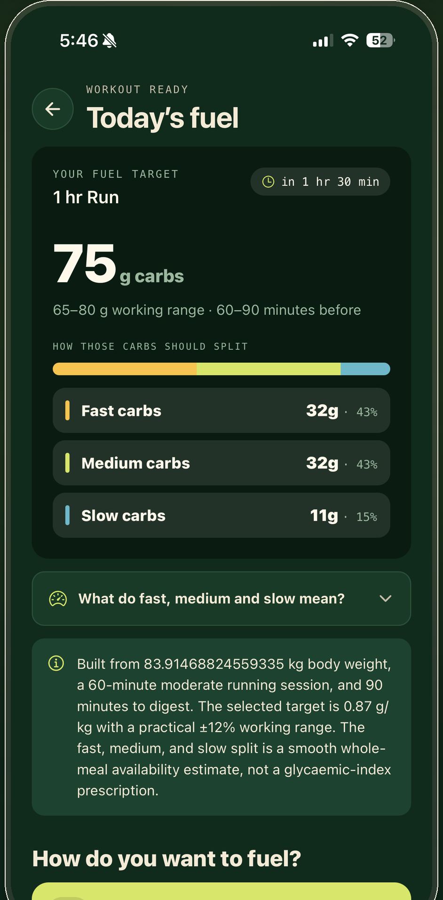
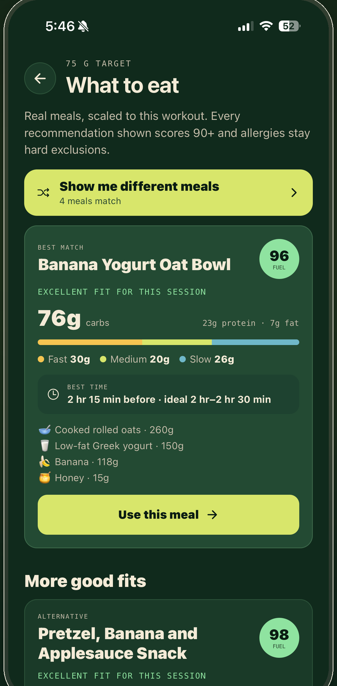
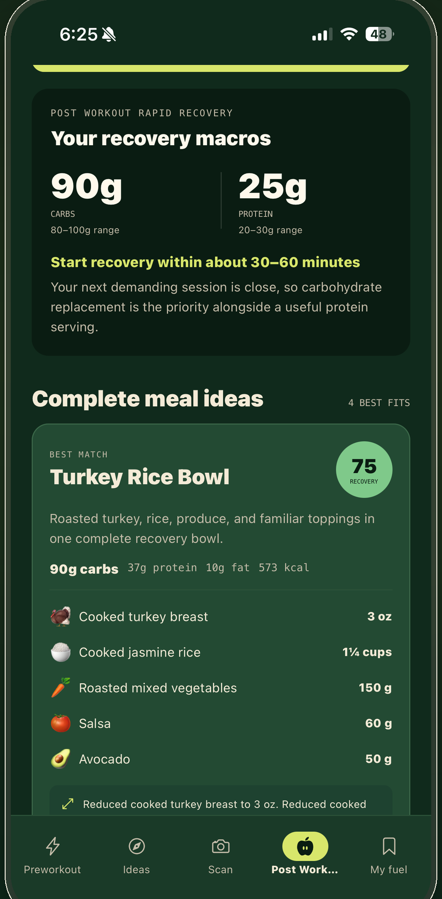

Workout Ready
Your carbs, worked out to the gram.
Not just how much. When.
Fast carbs
32g
43%
Medium carbs
32g
43%
Slow carbs
11g
15%

What To Eat
Real meals, scaled to today's session.
Banana Yogurt Oat Bowl
76g carbs
· 2 hr 15 min before

Post Workout
Refuel before the window closes.
90g
Carbs
25g
Protein
Start recovery within about 30–60 minutes.
StrictlyFuel
Your carbs, to the gram.
Every number cites its source.
Burke et al.
World Athletics
ISSN nutrient timing
ISSN female athlete